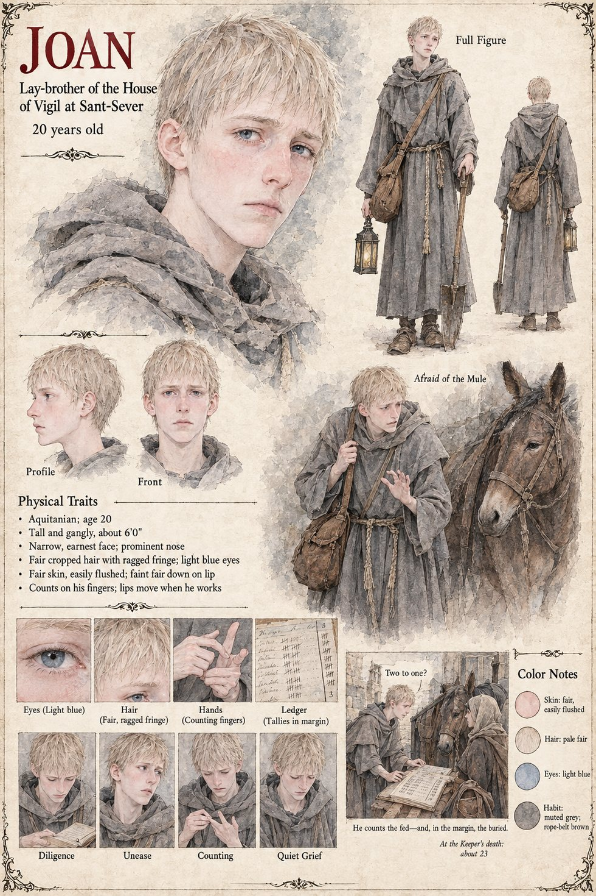

Joan
Lay-brother of the House of Vigil at Sant-Sever · 20 at the opening, about 23 at the Keeper's death
A lay-brother of twenty who carries the Keeper's saddlebag, is afraid of her mule, and stands behind her chair at the council with an air of respectful terror. He counts, as it turns out, with his lips moving, on his fingers when he works. On the third morning of the burying of the swarm Gersenda observes that he has stopped being afraid of the mule and is now afraid of nothing, working with a look on his face of a man who has been shown, quite suddenly, the inside of a word. He carries the lantern behind the Keeper on her midnight walk to the mill; and in the second winter, behind the refectory at Sant-Sever, where the ground is frozen to the depth of a hand and a grave takes four mornings and a fire, he begins to count the buried in the margin of the page on which he has counted the fed, and stops adding at a figure he never repeats.
At the Keeper's bed in the third year he asks her the question he has carried since the first of Iverin and never found the hour for: whether she might not simply have picked one. “Two to one,” says Joan, “and over by noon.” She considers it a long time with her hand on the cord, says that she was very tired that day, had not thought of it, and does not know. It was not an answer, and Joan, who loved her, does not pretend that it was. He goes on keeping the count of the fed at Sant-Sever, with Gersenda's second column of the dead beside it. The manuscript gives his age and his fear of the mule; the sheet's six feet of height, prominent nose, ragged fair fringe and light blue eyes are its own.
“Two to one, and over by noon.”


![A snow-covered field behind a Gothic refectory wall on a grey winter morning, a lean man in a mud-stained brown tunic with a sword at his hip bending over a deep sloped trench and paying out a knotted cord along it, grey-habited lay-brothers digging in the black earth beyond, a tall young lay-brother with an open book standing at the margin, a young woman with her arms folded and a flour sack at her hip watching at the right, carts and horses with children sitting on top drawn up along the wall at the upper left, breath fogging, and a cathedral spire on the misty horizon](../images/scenes/the-long-graves-grid.jpg)